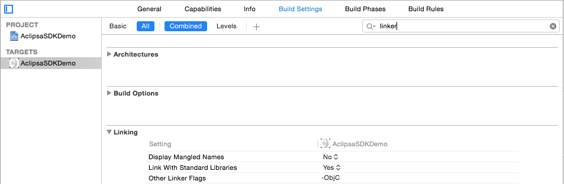
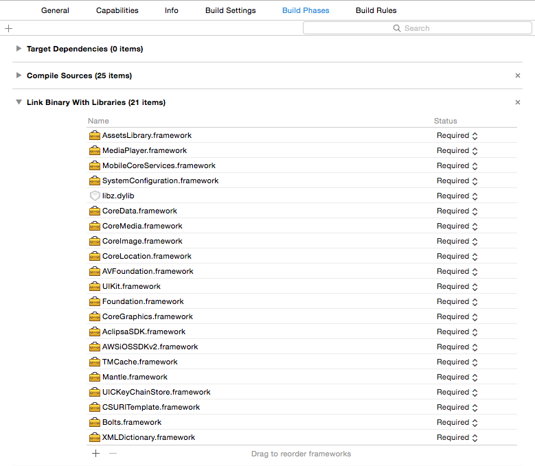

Introduction Document
Aclipsa SDK Startup Guide
Welcom to the Aclipsa SDK. The SDK allows you to integrate the Aclipsa video messaging service into your apps.
Section 1 - What is in the Aclipsa SDK
Documentation
This is where we document the Aclipsa SDK classes that you can use while developing your applications.
Framework
The framework contains all of the compiled code and the header files for the classes that are included in the Aclipsa SDK.
The framework includes AFNetworking v2. It does not need to be added to your project and can be used from the framework by including
Resources Bundle
The resources bundle contains any project assets that are needed by the SDK.
Sample Application
We’ve included a sample application to help you get started with the SDK. The Aclipsa SDK Demo application shows you how to use most of the features of the SDK.
Section 2 - How do I use the Aclipsa SDK
Basic Architecture
Using the SDK centers around the ACLIPSession class. It’s the hub for communication with the Aclipsa servers. It coordinates all of the communication and data management in the SDK. Apps should first create a session with the createSessionWithAppID class method and then use the activeSession class method for all future access. Only one session will ever be created per launch. The session will then allow to perform all other SDK functions, ie login, logout, loading video list, uploading vides, etc.
All network communication in the Aclipsa SDK is asynchronous and uses blocks to notify the caller when a network call has completed or if an error has occurred. All network based methods will take two blocks as parameters, one that will be called on a successful completion and one that gets called if any error occurs. For methods that load data from the network the completion block may be called more than once. An initial call with cached data can happen with an additional call happening once the data is refreshed.
Section 3 - Registering an App with Aclipsa
If you haven’t already received an API and Shared Secret for your app, please contact support@aclipsa.com
Section 4 - Building an App with the Aclipsa SDK
Xcode Project Configuration
A few steps need to be taken in order to get your project to build correctly with the Aclipsa SDK. First you need to add the -ObjC flag to Other Linker Flags. This allows the SDK to correctly link with your project.

Next you need to link a few of the system frameworks and libraries to your project. These enable various features like video playback to work. The required frameworks and libraries are:
- AssestsLibrary.framework
- MediaPlayer.framework
- MobileCoreServices.framework
- SystemConfiguration.framework
- libz.dylib
- CoreData.framework
- CoreMedia.framework
- CoreImage.framework
- CoreLocation.framework
- AVFoundation.framework
- UIKit.framework
- Foundation.framework
- CoreGraphics.framework
In the project editor, select your Target and highlight the Build Phases tab. Expand “Link Binary With Libraries.” Click the + button and add the required libraries.

You also need to add the Aclipsa SDK framework and resources bundle along with the AWS Mobile Framework for iOS v2 to your project. The simplest way to add them is to simply drag and drop them into your project’s file list. You can also add them through the Add File menu items if you prefer. The following provided files need to be added:
- AclipsaSDK.framework
- AclipsaSDK.bundle
- S3 folder which contains a 3rd party folder, AWSiOSSDKv2.framework, and a JSON folder.
The AWS framework can be downloaded from http://aws.amazon.com/mobile/sdk/
Getting an ACLIPSession
At this point your project is set-up to use the Aclipsa SDK. You should start off your use by creating an ACLIPSession in your - (BOOL)application:(UIApplication )application didFinishLaunchingWithOptions:(NSDictionary )launchOptions method with:
ACLIPSession.createSessionWithAppID("Your App ID", serverEnvironment: ACLIPDevelopmentServer)
[ACLIPSession createSessionWithAppID:@"Your App ID" serverEnvironment:ACLIPDevelopmentServer]
All future access and calls to the session should then use
ACLIPSession.activeSession()
[ACLIPSession activeSession]
to access the session.
Logging Into The SDK
Log in to the SDK to view/send videos and messages.
ACLIPSession.activeSession().loginWithUserID("UserID", completionBlock: { (results: AnyObject!) in // Login successful }, errorBlock: {(error: NSError!) in // Error logging in })
[[ACLIPSession activeSession] loginWithUserID:@"UserID" completionBlock:^(id results)
{
// Login successful
}
errorBlock:^(NSError *error)
{
// Error logging in
}];
Sending A Message
Send a message to recipients with an optional title, description, and attributes.
ACLIPSession.activeSession().sendMessage("Video Title", messageText: "Message Text", recipients: ["someone@example.com", "example@example.com"], videoURL: self.videoURL, skipEncoding: false, attributes: [:], completeBlock: { (results: AnyObject!) in // Message sent successfully }, errorBlock: { (error: NSError!) in // Error when sending message })
[[ACLIPSession activeSession] sendMessage:@"Video Title" messageText:@"Message Text" recipients:@[@"someone@example.com", @"example@example.com"] videoURL:[self videoURL] skipEncoding:NO, attributes: @{}, completeBlock:^(id results)
{
// Message sent successfully
}
errorBlock:^(NSError *error)
{
// Error when sending message
}];
Uploading A Video
Upload a video. By default, these videos can be viewed by any user.
ACLIPSession.activeSession().uploadVideoAtURL(NSURL.fileURLWithPath("Path to video"), title: "Video Title", attributes: [:], skipEncoding: false, completeBlock: { (results: AnyObject!) in // Video upload successful }, errorBlock: { (error: NSError!) in // Video upload error })
[[ACLIPSession activeSession] uploadVideoAtURL:[NSURL fileURLWithPath:@"Path to video"] title:@"Video Title" attributes:@{} skipEncoding:NO completeBlock:^(id results)
{
// Video upload successful
}
errorBlock:^(NSError *error)
{
// Video upload error
}];
Loading Messages
Register with the SDK for message polling. SDK checks for messages every 30 seconds
ACLIPSession.activeSession().registerMessageLoadingCompletionBlock({ (messages: [AnyObject]!, threads: [AnyObject]!) in var sortDescriptor: NSSortDescriptor = NSSortDescriptor(key: "lastMessage.createdDate", ascending: false) self.messageThreads = ((threads as NSArray).sortedArrayUsingDescriptors([sortDescriptor]) as? [ACLIPMessageThread])! self.tableView.reloadData() }, errorBlock: { (error: NSError!) in NSLog("An error occured while loading messages: %@", error); })
[[ACLIPSession activeSession] registerMessageLoadingCompletionBlock:^(NSArray *messages, NSArray *threads) {
NSSortDescriptor *sortDescriptor = [[NSSortDescriptor alloc] initWithKey:@"lastMessage.createdDate" ascending:NO];
[self setMessageThreads:[threads sortedArrayUsingDescriptors:@[sortDescriptor]]];
[[self tableView] reloadData];
}
errorBlock:^(NSError *error) {
NSLog(@"An error occured while loading messages: %@", error);
}];
Viewing A Video Message
Reload a message before trying to view it. This obtains authentication keys and ensures the message is still available to the recipient.
ACLIPSession.activeSession().loadMessageWithGUID(self.message?.guid, completeBlock: { (aclipMessage: AnyObject?) in if aclipMessage != nil { if let message = aclipMessage as? ACLIPMessage { self.message = message let controller: ACLIPMoviePlayerViewController! = ACLIPMoviePlayerViewController(forMessage: self.message) self.presentMoviePlayerViewControllerAnimated(controller) } } }, errorBlock: { (error: NSError!) in // Error loading the message })
[[ACLIPSession activeSession] loadMessageWithGUID:[[self message] guid] completeBlock:^(ACLIPMessage *aclipMessage)
{
if (aclipMessage)
{
ACLIPMoviePlayerViewController *controller = [ACLIPMoviePlayerViewController moviePlayerViewControllerForMessage:aclipMessage];
[self presentMoviePlayerViewControllerAnimated:controller];
}
}
errorBlock:^(NSError *error)
{
// Error loading the message
}];
Loading Videos
Load the videos available for a user.
ACLIPSession.activeSession().loadUserVideosWithCompletionBlock({(results: AnyObject?) in self.videos = results as! [ACLIPVideo] self.tableView.reloadData() }, errorBlock: {(error: NSError!) in // Error loading videos })
[[ACLIPSession activeSession] loadUserVideosWithCompletionBlock:^(NSArray *results)
{
[self setVideos:results];
[[self tableView] reloadData];
}
errorBlock:^(NSError *error)
{
// Error loading videos
}];
Viewing A Video
Reload a video before trying to view it. This obtains authentication keys and ensures the message is still available to the recipient.
ACLIPSession.activeSession().loadUserVideoWithID(video.guid, completionBlock: { (aclipVideo: AnyObject?) in if aclipVideo != nil { let controller: ACLIPMoviePlayerViewController = ACLIPMoviePlayerViewController(forVideo: video) self.presentMoviePlayerViewControllerAnimated(controller) } }, errorBlock: { (error: NSError!) in // Error loading video })
[[ACLIPSession activeSession] loadUserVideoWithID:[video guid] completionBlock:^(ACLIPVideo *aclipVideo)
{
if (aclipVideo)
{
ACLIPMoviePlayerViewController *controller = [ACLIPMoviePlayerViewController moviePlayerViewControllerForVideo:video];
[self presentMoviePlayerViewControllerAnimated:controller];
}
}
errorBlock:^(NSError *error)
{
// Error loading the video
}];